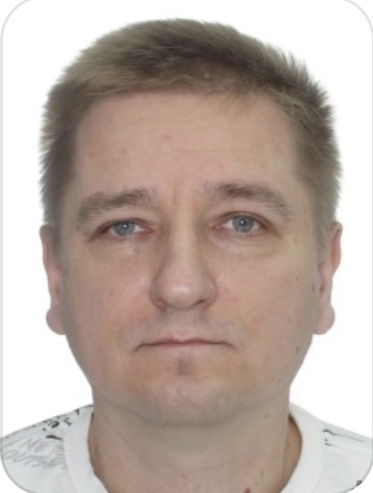

ДОСВІД РОБОТИ
Оператор
Мобілізований до лав сил територіальної оборони ЗСУ.
Січень 2024 -
Провідний інженер-програміст
Фермерське господарство "ОРГАНІК СІСТЕМС", Миколаїв
Липень 2021 – Січень 2024
Супровод системи бухобліку, автоматизація процесів, пов`язаних з виробництвом, мобільні додатки у середовищі 1С
Програміст-прикладний
ТОВ Кернел-Трейд (https://www.kernel.ua), Миколаїв
Квітень 2010 - Липень 2021
Супроводжував, доопрацьовував конфігурацію 1С "Тендер-документообіг", "Бюджетування", "ОС МСФЗ". Супроводжував конфігурацію «1С:Підприємство 8: Бухгалтерія для України» Супроводжував конфігурацію «1С:Підприємство 8: ЗУП для України»
Програміст-прикладний
ТОВ Зерноторгівельна компанія (великий виробничий холдинг), Миколаїв
Травень 2007 - Березень 2010
Супроводжував, доопрацьовував конфігурацію системи «1С:Підприємство 8 – УПП для України» під поставлені завдання підприємства. Супроводжував, доопрацьовував конфігурацію системи «1С:Підприємство 7.7 – Зарплата + Кадри». Брав участь у проекті щодо впровадження обліку з МСФЗ. Ділянки: управління запасами, бухгалтерський облік, податковий облік, управління персоналом, облік МСФЗ.
Інженер-програміст
ВАТ ЮГцемент (найбільше підприємство промисловості будівельних матеріалів на Півдні України), Ольшанське
Липень 2002 – Квітень 2007
Супроводжував, доопрацьовував конфігурації системи «1С:Підприємство 7.7 - Виробництво + Послуги + Бухгалтерія» (ПУБ) та «Зарплата + Кадри» (ЗІК). Розробляв та супроводжував програмне забезпечення в MS Access для автоматизації поставлених завдань. Були розроблені програмні забезпечення в MS Access з обліку продукції, що відпускається через автомобільну вагову підприємства з можливістю обміну даними з «1С:Підприємство - ПУБ», з обліку діяльності автотранспорту підприємства. В результаті було покращено такі показники як час обробки та аналізу відповідних даних, витрата ПММ автотранспортом.
ОСВІТА
Вища
Український Державний Морський Технічний Університет імені Адмірала Макарова
Березень 2003
Спеціальність: Програмне забезпечення автоматизованих систем. Кваліфікація: Інженер-програміст
НАВИЧКИ
- Хороші знання середовища програмування 1С8, 1С7.7
- Навички програмування серед VBA в MS Access, MS Excel, MS Word
- основи бухгалтерського обліку, кадрового обліку та ЗП
- знання конфігурації «1С:Підприємство 8 – УПП для України»
- знання конфігурації «1С:Підприємство 7.7 – ЗІК для України»
- знання конфігурації «1С:Підприємство 7.7 – ПУБ для України»
- знання зміни «1С:Підприємство 8 – Бухгалтерія для України»
- знання зміни «1С:Підприємство 8 – ЗУП для України»
- Маю досвід розробки та застосування змін з урахуванням 1С8
- у 2008 році пройшов сертифікований курс фірми 1С «Використання запитів у системі «1С:Підприємство 8» та отримав іменний сертифікат
- у 2017 році пройшов сертифікований курс фірми 1С «Керовані форми в системі «1С:Підприємство 8» та отримав іменний сертифікат
ВОЛОДІННЯ МОВАМИ
- українська
- англійська (зі словником)
ІНШЕ
Як працівник відповідальний, пунктуальний, який легко навчається